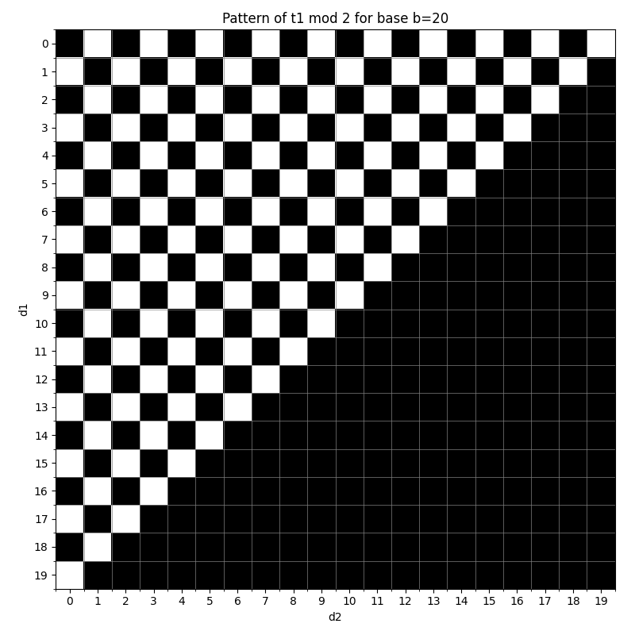
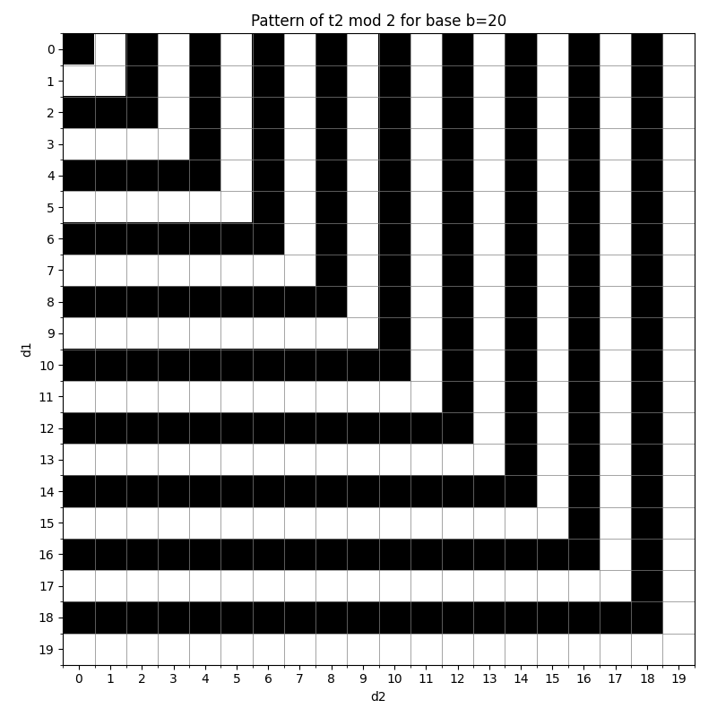
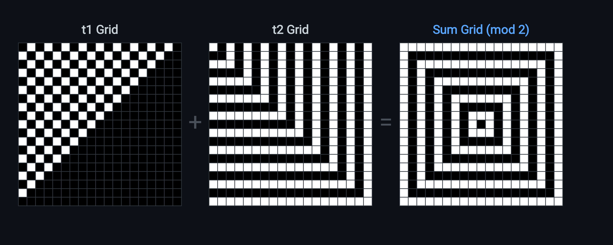

Let $a_b(n)$ be the number of integer tuples $(x_1, x_2, \ldots, x_{k+1})$ where $0 \leq x_i \leq b-1$, such that $|x_i - x_{i+1}| = d_i$ for all $i$, where $(d_1, d_2, \ldots, d_k)$ are digits of $n$ in base $b$.
1. Normal Form Definitions
$\left\langle\begin{array}{c}a_1 \\ a_2\end{array}\right\rangle_b$ is in 'normal form' when:
$a_b(n)$ is equal to $|\left\langle\begin{array}{l} 0 \\ b-1 \end{array}\right\rangle_b\left(d_1, d_2, \ldots, d_k\right)|$.
For even base $b$, $a_b(n)$ is even for all $n$. That's because solutions come in pairs: $(x_1,x_2,\ldots,x_{k+1})$ is paired with $(b-1-x_1,b-1-x_2,\ldots,b-1-x_{k+1})$, and for them to be distinct, $b-1-x_i \neq x_i$ for all $i$, or $b -1 \neq 2x_i$, hence $b$ can't be odd in this case. But the only time this happens in odd bases is when all $x_i$ are equal to $(b-1)/2$, but that implies it can only happen in the case where all $d_i$ are 0, and that's only ever the case when $n=0$. So we can say that $a_b(n)$ is always even for $n>0$ and for even bases it's even for all $n$.
We'll prove that:
$$|\left\langle x \right\rangle_b (d) + \left\langle x \right\rangle_b (b-d)| = 2$$
Proof: This evaluates to
$$|\left\langle x+d \right\rangle_b + \left\langle x-d \right\rangle_b + \left\langle x-d+b \right\rangle_b + \left\langle x+d-b \right\rangle_b|$$
Each term's value is 1 if it is valid and 0 if invalid.
$\left\langle x+d \right\rangle_b$ can be in the range $[0,2b-2]$ and obviously if $\left\langle x+d \right\rangle_b$ is in the range $[r_1,r_2]$ then $\left\langle x+d-b \right\rangle_b$ is in the range $[r_1-b,r_2-b]$.
$\left\langle x+d \right\rangle_b$ is valid when it's in the range $[0,b-1]$ and invalid when it's in the range $[b,2b-2]$.
When $\left\langle x+d \right\rangle_b$ is in $[0,b-1]$, i.e., when it's valid, then $\left\langle x+d-b\right\rangle_b$ is in the range $[-b,-1]$. Also $\left\langle x+d-b\right\rangle_b$ is in the range $[-b,b-1]$ and whenever it is invalid, i.e., whenever it's in range $[-b,-1]$, then $\left\langle x+d \right\rangle_b$ is in the range $[0,b-1]$ or valid.
So, we notice:
$\left\langle x+d \right\rangle_b$ is valid $\iff$ $\left\langle x+d-b \right\rangle_b$ is invalid.
Similarly we can conclude:
$\left\langle x-d \right\rangle_b$ is valid $\iff$ $\left\langle x-d+b \right\rangle_b$ is invalid.
This means that the following is true when $d \in \{1,2,3,\ldots,b-1\}$:
When $\left\langle x_1,x_2,\ldots,x_p\right\rangle_b$ is in normal form, $d \in \{1,2,3,\ldots,b-1\}$, and $p$ can be any natural number, therefore this is true in general.
where $d_k$ isn't 0, $n=d_1\ldots d_{k-1}d_k$ and $m=d_1\ldots d_{k-1}(b-d_k)$.
When we evaluate both of these at $d_1$ all the way up to $d_{k-1}$ then the resulting collection of normal forms would be exactly the same. That implies
Let's denote the first term by $t_1$ and the second term by $t_2$.
In $t_1$ there could be two cases, either $b-1-d_1-d_2 \geq 0$ or $b-1-d_1-d_2 < 0$. This implies, either $b-1 \geq d_1+d_2$ or $b-1 < d_1+d_2$.
These two cases separate the $b^2$ grid into two distinct regions. Let's call these $R_1$ and $R_2$ respectively. Now in case $R_1$ the value of $t_1$ is $b-d_1-d_2$ and in case $R_2$ its value is 0.
If we only arrange the values of $t_1$ for each cell in the $b^2$ grid and highlight cells mod 2 as $\equiv 0$ would be black and $\equiv 1$ would be white, visually the regions look like this, for base 20:

Base 20 grid for $t_1 \pmod 2$
Analysing $t_2$ we get:
Either $d_1 < d_2$ or $d_1 \geq d_2$ and the values in the regions would be $b-d_1$ and $b-d_2$ respectively. So just like before we use the inequality to determine the two distinct regions and then in each region the values would be plotted mod 2 with their respective formula.
If we choose base 20, the grid for $t_2$ is this:

Base 20 grid for $t_2 \pmod 2$
And since $a_b(n)$ is the sum of these two, we can add these two grids visually! Say B is black and W is white, then due to addition mod 2 we would color the cells of the 'sum grid' as $B+B= W+W = B$ and $B+W=W+B=W$.
If we do that we get this:

Combined Grid: $t_1 + t_2 \pmod 2$
Of course we need to account for when $d_1$ or $d_2$ is 0. But that's trivial. Similarly, any range of terms can be analysed.